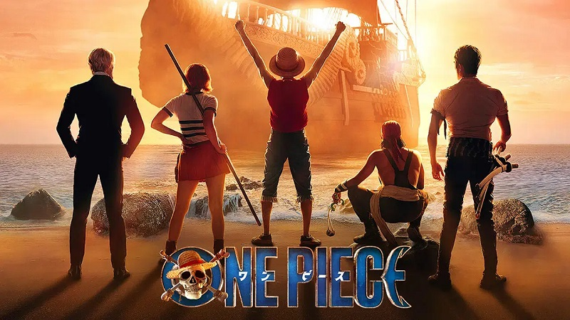

La temporada 2 de One Piece arranca pronto su rodaje Taz Skylar, actor que interpreta a Sanji en la versión live-action de la One Piece de Netflix, adelanta cuándo podría arrancar el rodaje de la esperada temporada 2  Luffy y su tripulación Leer más...
Berserk se corona como el manga más vendido en América El legado de Kentaro Miura está más vigente que nunca y este hito conseguido por el manga de Berserk lo confirma Berserk Leer más...